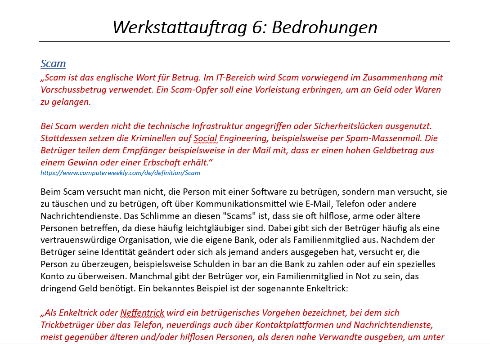

Der Weg ins Internet
Was sind die Gefahren im Innternet und wie kann man sich Schützen.
Was ist Malware?
„Malware ist ein Sammelbegriff für jede Art von Schadsoftware, die entwickelt wurde, um Ihr Gerät ohne Ihr Wissen zu infiltrieren, Schäden und Unterbrechungen zu verursachen oder Daten zu stehlen. Adware, Spyware, Viren, Botnets, Trojaner, Würmer, Rootkits und Ransomware fallen allesamt unter diesen Sammelbegriff.“ https://www.avast.com/de-de/c-malware „Ist Malware ein Virus? Ja und nein. Während alle Computerviren Malware sind, handelt es sich umgekehrt bei Malware nicht immer um Viren. Viele verwenden die beiden Begriffe als Synonyme, aber aus technischer Sicht sind Viren und Malware nicht dasselbe. Stellen Sie sich das folgendermaßen vor: Malware ist ein bösartiger Code. Viren sind nur eine Form von Malware. Computerviren bestehen aus bösartigem Programmcode, der sich über Computer und Netzwerke verbreitet.“ https://www.avast.com/de-de/c-malware
Zusammengefasst ist Malware ein Begriff, der alles bezeichnet, was einen Code enthält (also eine Software ist), die einem Computer oder System schadet. Malware kann in verschiedenen Formen auftreten, da der Begriff "ein Sammelbegriff für jede Art von schädlicher Software ist". Malware existiert in vielen verschiedenen Versionen, einige davon sind:
- Virus
- Trojaner
- Wurm
- Ransomware
Wie kann man sich schützen?
Gegen Malware kann man sich mit einem guten Virenschutz schützen, und es lohnt sich sicherlich, dafür zu zahlen. Die Firewall, die normalerweise vorhanden ist (oder zumindest sein sollte), bietet auch einen guten Schutz gegen Malware, solange man sie nicht deaktiviert, da sie alles filtert, was in das System gelangt. Wichtig ist auch die Verwendung sicherer Passwörter, damit Hacker und Viren es schwerer haben, an Ihre Daten zu gelangen. Es gibt noch weitere Möglichkeiten, darunter:
- Malware-Scanner
- Software-Updates
- E-Mail-Filter
- Regelmäßige Backups
Fazit
Ich finde, es ist ein wichtiges Thema, denn Malware wird immer besser und schwieriger zu bekämpfen, wodurch wir unseren Schutz auch verbessern müssen. Ich habe zwar nicht viel Neues gelernt, außer zum Beispiel die verschiedenen Arten von Malware und was so existiert. Ich nehme mir jedoch die Tipps zu Herzen und werde versuchen, mein System besser zu schützen.